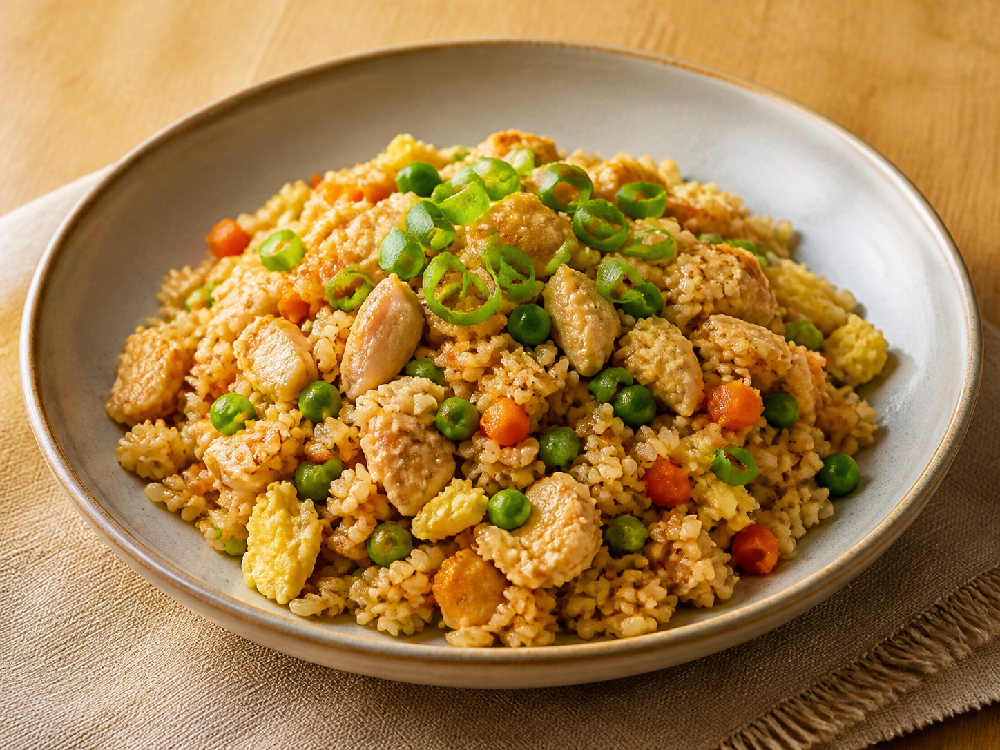
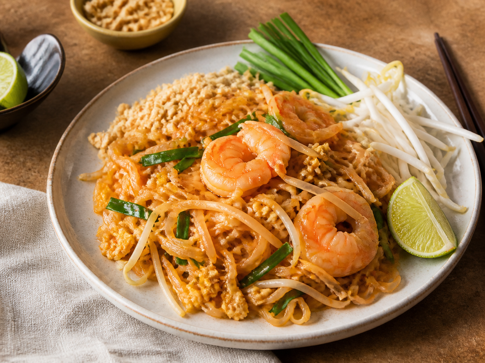
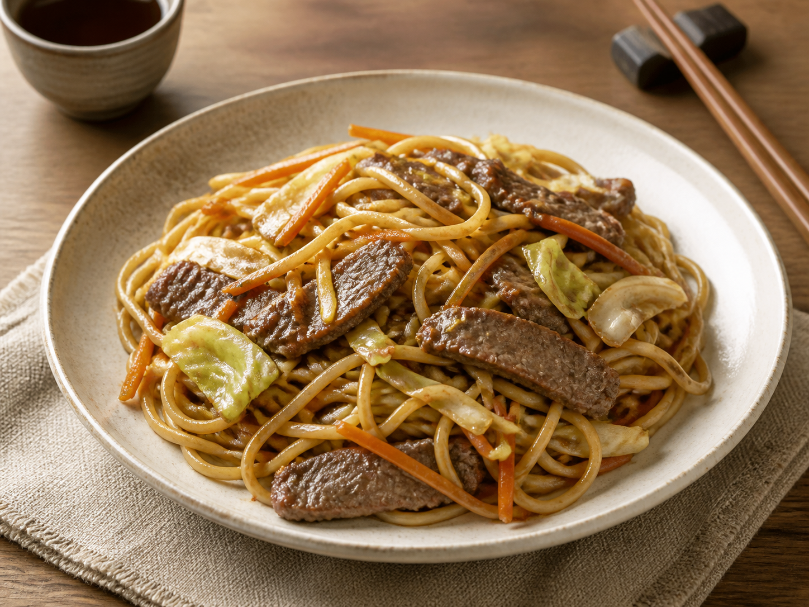

25 minAsian cooking, minus the guesswork
Cook something brilliant tonight.
Thirty popular Asian recipes written for real kitchens, busy evenings, and people who need every step to actually make sense.
30 easy recipes10 Thai favourites0 mystery steps

Tonight's pick · 30 minFoolproof Pad ThaiStart here
Most-loved recipes

30 min 25 min
25 min
 20 min
20 min
 40 min
40 min
Indian · Easy
Easy Butter Chicken
Creamy tomato chicken with gentle spice and a rich restaurant-style sauce.